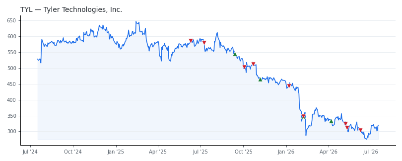

bullish · bearish · n/a — dots: price>SMA10 · SMA10>SMA50 · SMA50>SMA200 · up>down volume (20d)
Software & Services · large cap · ★ 1 buyer(s) sit on a committee that regulates this industry
Members who bought TYL earned a dollar-weighted -17.7% from their disclosure dates, versus +8.3% for the S&P 500 over the same holding windows (-26.0% alpha).

▲ green = a disclosed purchase · ▼ red = a disclosed sale (plotted on disclosure date)
Tyler Technologies provides a full suite of software solutions and services that address the needs of cities, counties, schools, courts and other local government entities. The company's three core products are Munis, which is the core ERP system, Odyssey, which is the court management system, or CMS, and payments. The company also provides a variety of add-on modules and offers outsourced property tax assessment services. SERVICES-PREPACKAGED SOFTWARE · website
| Revenue | $2.3B | Net income | $315.6M |
|---|---|---|---|
| Operating income | $357.7M | Diluted EPS | $7.20 |
| Assets | $5.6B | Equity | $3.7B |
| Member | Chamber | Out-performer | Disclosed buys $ | Return on buys |
|---|---|---|---|---|
| Valerie Hoyle | house | — | $16K | -41.4% |
| Rohit Khanna ★ | house | — | $16K | -7.5% |
| Gilbert Cisneros | house | — | $8K | -2.7% |
| Lisa McClain | house | — | $8K | -5.9% |
Disclosed $ figures are bracket midpoints — filings report ranges (e.g. $1,001–$15,000), not exact amounts.
| Fund | Fund alpha vs SPY | Position | % of book |
|---|---|---|---|
| Cornerstone Advisors, LLC | +1% | $9M | 0.3% |
| Bouvel Investment Partners, LLC | +4% | $2M | 0.5% |
| Greenfield Seitz Capital Management, LLC | +7% | $1M | 0.3% |
Hedge data: SEC EDGAR 13F · ranked funds beat SPY in >50% of their quarters · fund alpha = mirror-portfolio return minus SPY.